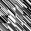
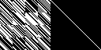
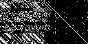
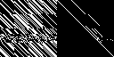

This test case compares a g2h generated hmatrix with an original hmatrix in decoding
time perl ../../initpattern.pl g2hpattern.img 1 512-rw-rw-r-- 1 philipp philipp 1049088 Sep 20 12:03 g2hpattern.img
time perl ../../controllersim.pl g2hpattern.img "g2hsimulated(20p).dump" "g2hclean(20p).dump" n64.case
-rw-rw-r-- 1 philipp philipp 15360000 Sep 20 12:03 g2hclean(20p).dump
-rw-rw-r-- 1 philipp philipp 15360000 Sep 20 12:03 g2hsimulated(20p).dump
python3 ../../g2h.py gmatrix_n128_k64_m64.g g2hmatrix_n128_k64_m64.h
Usage: g2h.py gmatrix_n8192_k3808.g hmatrix_n8192_k3808.h
n: 128
k: 64
m: 64
Density of G: 2080
Shape of G: (64, 128)
DATAsize: 64
ECCsize:64
Matrix written: ./dmpview "Q1(8b).m"
Q1(8b).m
Q1 is the eye
P1.shape: (64, 64)
Matrix written: ./dmpview "P1(8b).m"
P1(8b).m
Matrix written: ./dmpview "P1_inv(8b).m"
P1_inv(8b).m
Calculating H2:
Done calculating H2. Now saving H2 to g2hmatrix_n128_k64_m64.h
Matrix written: ./dmpview "g2hmatrix_n128_k64_m64.h"
g2hmatrix_n128_k64_m64.h
Done writing, now printing H2
G-Matrix: 
Original H-Matrix
Reading values from geometry file n64.case
datapos: [0]
eccpos: [8]
dataeccpos: [0]
pagesize: 20
eccsize: 8
EbN: 3
SNR_lin: 1.9952623149688795
No: 0.5011872336272724
sigma: 0.5005932648504534
n: 128
k: 64
m: 64
Iterations: 19 | Amount of Bit Errors (SPA) : 51
Iterations: 19 | Amount of Bit Errors (SPA) : 38
Iterations: 19 | Amount of Bit Errors (SPA) : 29
Iterations: 19 | Amount of Bit Errors (SPA) : 27
Iterations: 19 | Amount of Bit Errors (SPA) : 35
Result: Dateien resolved.dump und g2hcleanshort(20p).dump sind verschieden.
 G2H H-Matrix
Reading values from geometry file n64.case
datapos: [0]
eccpos: [8]
dataeccpos: [0]
pagesize: 20
eccsize: 8
EbN: 3
SNR_lin: 1.9952623149688795
No: 0.5011872336272724
sigma: 0.5005932648504534
n: 128
k: 64
m: 64
Iterations: 19 | Amount of Bit Errors (SPA) : 55
Iterations: 19 | Amount of Bit Errors (SPA) : 37
Iterations: 19 | Amount of Bit Errors (SPA) : 39
Iterations: 19 | Amount of Bit Errors (SPA) : 44
Iterations: 19 | Amount of Bit Errors (SPA) : 42
Result: Dateien resolved.dump und g2hcleanshort(20p).dump sind verschieden.
perl ../../optimizeh.pl g2hmatrix_n128_k64_m64.h optmatrix_n128_k64_m64.h
n: 128 k: 64 m: 64
Replacing 4 which had popcount of 30 with 0^4 with new popcount of 26
Replacing 8 which had popcount of 30 with 0^8 with new popcount of 28
Replacing 12 which had popcount of 30 with 0^12 with new popcount of 26
Replacing 16 which had popcount of 38 with 0^16 with new popcount of 24
Replacing 17 which had popcount of 38 with 0^17 with new popcount of 36
Replacing 18 which had popcount of 38 with 0^18 with new popcount of 36
Replacing 20 which had popcount of 38 with 0^20 with new popcount of 28
Replacing 21 which had popcount of 38 with 0^21 with new popcount of 32
Replacing 22 which had popcount of 38 with 0^22 with new popcount of 34
Replacing 26 which had popcount of 38 with 0^26 with new popcount of 30
Replacing 29 which had popcount of 38 with 0^29 with new popcount of 36
Replacing 32 which had popcount of 36 with 0^32 with new popcount of 28
Replacing 33 which had popcount of 36 with 0^33 with new popcount of 30
Replacing 35 which had popcount of 36 with 0^35 with new popcount of 34
Replacing 39 which had popcount of 36 with 0^39 with new popcount of 34
Replacing 40 which had popcount of 36 with 0^40 with new popcount of 32
Replacing 41 which had popcount of 36 with 0^41 with new popcount of 34
Replacing 45 which had popcount of 36 with 0^45 with new popcount of 26
Replacing 47 which had popcount of 36 with 0^47 with new popcount of 34
Replacing 0 which had popcount of 30 with 0^58 with new popcount of 24
Replacing 5 which had popcount of 30 with 1^5 with new popcount of 26
Replacing 9 which had popcount of 30 with 1^9 with new popcount of 28
Replacing 13 which had popcount of 30 with 1^13 with new popcount of 26
Replacing 1 which had popcount of 30 with 1^16 with new popcount of 28
Replacing 18 which had popcount of 36 with 1^18 with new popcount of 32
Replacing 19 which had popcount of 38 with 1^19 with new popcount of 36
Replacing 22 which had popcount of 34 with 1^22 with new popcount of 30
Replacing 24 which had popcount of 38 with 1^24 with new popcount of 36
Replacing 25 which had popcount of 38 with 1^25 with new popcount of 34
Replacing 27 which had popcount of 38 with 1^27 with new popcount of 36
Replacing 30 which had popcount of 38 with 1^30 with new popcount of 34
Replacing 31 which had popcount of 38 with 1^31 with new popcount of 36
Replacing 36 which had popcount of 36 with 1^36 with new popcount of 32
Replacing 41 which had popcount of 34 with 1^41 with new popcount of 28
Replacing 42 which had popcount of 36 with 1^42 with new popcount of 34
Replacing 43 which had popcount of 36 with 1^43 with new popcount of 34
Replacing 44 which had popcount of 36 with 1^44 with new popcount of 34
Replacing 46 which had popcount of 36 with 1^46 with new popcount of 30
Replacing 47 which had popcount of 34 with 1^47 with new popcount of 28
Replacing 1 which had popcount of 28 with 1^63 with new popcount of 24
Replacing 6 which had popcount of 30 with 2^6 with new popcount of 26
Replacing 10 which had popcount of 30 with 2^10 with new popcount of 28
Replacing 14 which had popcount of 30 with 2^14 with new popcount of 26
Replacing 17 which had popcount of 36 with 2^17 with new popcount of 34
Replacing 23 which had popcount of 38 with 2^23 with new popcount of 32
Replacing 24 which had popcount of 36 with 2^24 with new popcount of 34
Replacing 28 which had popcount of 38 with 2^28 with new popcount of 30
Replacing 29 which had popcount of 36 with 2^29 with new popcount of 26
Replacing 34 which had popcount of 36 with 2^34 with new popcount of 28
Replacing 37 which had popcount of 36 with 2^37 with new popcount of 34
Replacing 40 which had popcount of 32 with 2^40 with new popcount of 30
Replacing 2 which had popcount of 30 with 2^48 with new popcount of 28
Replacing 7 which had popcount of 30 with 3^7 with new popcount of 26
Replacing 3 which had popcount of 30 with 3^8 with new popcount of 28
Replacing 17 which had popcount of 34 with 3^17 with new popcount of 28
Replacing 22 which had popcount of 30 with 3^22 with new popcount of 28
Replacing 27 which had popcount of 36 with 3^27 with new popcount of 34
Replacing 35 which had popcount of 34 with 3^35 with new popcount of 32
Replacing 37 which had popcount of 34 with 3^37 with new popcount of 32
Replacing 38 which had popcount of 36 with 3^38 with new popcount of 30
Replacing 43 which had popcount of 34 with 3^43 with new popcount of 30
Replacing 8 which had popcount of 28 with 4^8 with new popcount of 26
Replacing 20 which had popcount of 28 with 4^20 with new popcount of 24
Replacing 30 which had popcount of 34 with 4^30 with new popcount of 32
Replacing 31 which had popcount of 36 with 4^31 with new popcount of 32
Replacing 33 which had popcount of 30 with 4^33 with new popcount of 26
Replacing 35 which had popcount of 32 with 4^35 with new popcount of 26
Replacing 42 which had popcount of 34 with 4^42 with new popcount of 32
Replacing 9 which had popcount of 28 with 5^9 with new popcount of 26
Replacing 30 which had popcount of 32 with 5^30 with new popcount of 28
Replacing 10 which had popcount of 28 with 6^10 with new popcount of 26
Replacing 21 which had popcount of 32 with 6^21 with new popcount of 28
Replacing 41 which had popcount of 28 with 6^41 with new popcount of 24
Replacing 19 which had popcount of 36 with 7^19 with new popcount of 32
Replacing 31 which had popcount of 32 with 7^31 with new popcount of 28
Replacing 12 which had popcount of 26 with 8^12 with new popcount of 16
Replacing 23 which had popcount of 32 with 8^23 with new popcount of 28
Replacing 35 which had popcount of 26 with 8^35 with new popcount of 24
Replacing 37 which had popcount of 32 with 8^37 with new popcount of 28
Replacing 42 which had popcount of 32 with 8^42 with new popcount of 30
Replacing 13 which had popcount of 26 with 9^13 with new popcount of 16
Replacing 17 which had popcount of 28 with 9^17 with new popcount of 26
Replacing 47 which had popcount of 28 with 9^47 with new popcount of 20
Replacing 14 which had popcount of 26 with 10^14 with new popcount of 16
Replacing 39 which had popcount of 34 with 10^39 with new popcount of 32
Replacing 15 which had popcount of 30 with 11^15 with new popcount of 26
Replacing 11 which had popcount of 30 with 11^34 with new popcount of 28
Replacing 47 which had popcount of 20 with 13^47 with new popcount of 8
Replacing 42 which had popcount of 30 with 16^42 with new popcount of 24
Replacing 46 which had popcount of 30 with 16^46 with new popcount of 26
Replacing 48 which had popcount of 26 with 16^48 with new popcount of 24
Replacing 59 which had popcount of 26 with 16^59 with new popcount of 24
Replacing 24 which had popcount of 34 with 18^24 with new popcount of 32
Replacing 25 which had popcount of 34 with 18^25 with new popcount of 32
Replacing 27 which had popcount of 34 with 18^27 with new popcount of 32
Replacing 18 which had popcount of 32 with 18^29 with new popcount of 30
Replacing 19 which had popcount of 32 with 19^20 with new popcount of 30
Replacing 44 which had popcount of 34 with 20^44 with new popcount of 32
Replacing 52 which had popcount of 26 with 20^52 with new popcount of 24
Replacing 63 which had popcount of 26 with 20^63 with new popcount of 24
Replacing 24 which had popcount of 32 with 22^24 with new popcount of 30
Replacing 25 which had popcount of 32 with 25^63 with new popcount of 26
Replacing 39 which had popcount of 32 with 26^39 with new popcount of 30
Replacing 26 which had popcount of 30 with 26^45 with new popcount of 26
Replacing 27 which had popcount of 32 with 27^42 with new popcount of 30
Replacing 27 which had popcount of 30 with 27^56 with new popcount of 28
Replacing 28 which had popcount of 30 with 28^62 with new popcount of 26
Replacing 40 which had popcount of 30 with 32^40 with new popcount of 28
Replacing 32 which had popcount of 28 with 32^55 with new popcount of 8
Replacing 33 which had popcount of 26 with 33^52 with new popcount of 8
Replacing 36 which had popcount of 32 with 34^36 with new popcount of 30
Replacing 34 which had popcount of 28 with 34^57 with new popcount of 8
Replacing 36 which had popcount of 30 with 36^41 with new popcount of 28
Replacing 36 which had popcount of 28 with 36^42 with new popcount of 26
Replacing 38 which had popcount of 30 with 37^38 with new popcount of 26
Replacing 37 which had popcount of 28 with 37^42 with new popcount of 26
Replacing 39 which had popcount of 30 with 39^49 with new popcount of 24
Replacing 40 which had popcount of 28 with 40^58 with new popcount of 24
Replacing 44 which had popcount of 32 with 44^49 with new popcount of 30
Replacing 45 which had popcount of 26 with 45^48 with new popcount of 8
Replacing 60 which had popcount of 26 with 46^60 with new popcount of 24
Replacing 35 which had popcount of 24 with 0^35 with new popcount of 8
Replacing 18 which had popcount of 30 with 1^18 with new popcount of 20
Replacing 44 which had popcount of 30 with 1^44 with new popcount of 22
Replacing 2 which had popcount of 28 with 2^6 with new popcount of 24
Replacing 31 which had popcount of 28 with 4^31 with new popcount of 26
Replacing 15 which had popcount of 26 with 7^15 with new popcount of 16
Replacing 7 which had popcount of 26 with 7^60 with new popcount of 24
Replacing 11 which had popcount of 28 with 11^15 with new popcount of 26
Replacing 21 which had popcount of 28 with 11^21 with new popcount of 26
Replacing 24 which had popcount of 30 with 18^24 with new popcount of 28
Replacing 25 which had popcount of 26 with 25^32 with new popcount of 24
Replacing 48 which had popcount of 24 with 32^48 with new popcount of 22
We did 3 rounds and optimized 588 bits away (2080 bits -> 1492 bits) [25.390625% -> 18.212890625].
 Optimized H-Matrix
Reading values from geometry file n64.case
datapos: [0]
eccpos: [8]
dataeccpos: [0]
pagesize: 20
eccsize: 8
EbN: 3
SNR_lin: 1.9952623149688795
No: 0.5011872336272724
sigma: 0.5005932648504534
n: 128
k: 64
m: 64
Iterations: 19 | Amount of Bit Errors (SPA) : 16
Iterations: 19 | Amount of Bit Errors (SPA) : 20
Iterations: 19 | Amount of Bit Errors (SPA) : 38
Iterations: 19 | Amount of Bit Errors (SPA) : 18
Iterations: 19 | Amount of Bit Errors (SPA) : 3
Result: Dateien resolved.dump und g2hcleanshort(20p).dump sind verschieden.
 Optimized H-Matrix2
Reading values from geometry file n64.case
datapos: [0]
eccpos: [8]
dataeccpos: [0]
pagesize: 20
eccsize: 8
EbN: 3
SNR_lin: 1.9952623149688795
No: 0.5011872336272724
sigma: 0.5005932648504534
n: 128
k: 64
m: 64
Iterations: 19 | Amount of Bit Errors (SPA) : 0
Iterations: 19 | Amount of Bit Errors (SPA) : 13
Iterations: 19 | Amount of Bit Errors (SPA) : 22
Iterations: 19 | Amount of Bit Errors (SPA) : 22
Iterations: 19 | Amount of Bit Errors (SPA) : 0
Result: Dateien resolved.dump und g2hcleanshort(20p).dump sind verschieden.